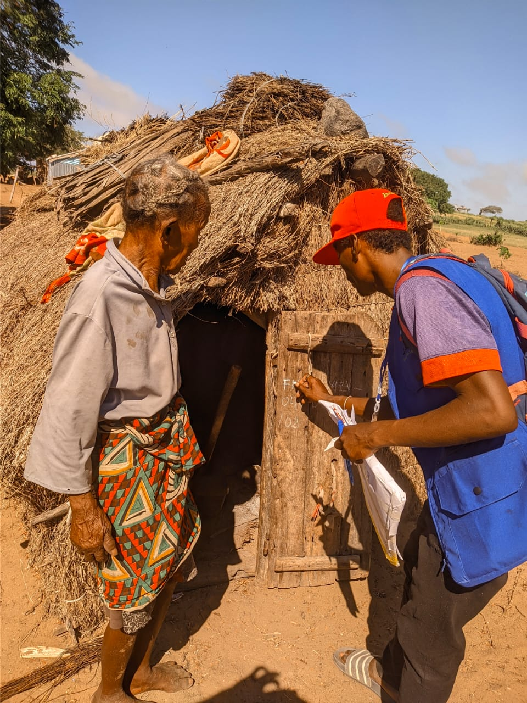

Sur le terrain
Nos actions de ciblage


Notre approche
Cibler les personnes fragiles ou qui traversent des difficultés et qui méritent d’être aidées — pour agir juste et servir vrai.
Notre mission
Le ciblage est au cœur de l’action de Fanambina : nous identifions les personnes en situation de fragilité ou qui rencontrent des difficultés dans leur vie — économique, sociale, sanitaire ou familiale — et qui méritent d’être soutenues.
Notre objectif est d’agir avec équité : cibler de façon juste, transparente et cohérente, pour que l’aide aille vers ceux qui en ont vraiment besoin, tout en les accompagnant vers une meilleure autonomie.
Nous contacterRepérage des personnes ou familles en difficulté selon des critères clairs et partagés.
Critères transparents pour une sélection juste des bénéficiaires de l’aide.
Suivi personnalisé et soutien adapté pour chaque personne ciblée.
Objectif d’amélioration durable des conditions de vie et d’autonomie.
Qui ciblons-nous ?
Nous nous concentrons sur les situations de fragilité ou de difficulté pour orienter l’aide là où elle aura le plus d’effet.
Personnes ou familles en grande précarité, sans revenus stables ou en situation d’insécurité alimentaire.
Personnes isolées, personnes âgées, enfants ou familles en difficulté d’accès à l’éducation ou aux soins.
Personnes confrontées à un choc (perte d’emploi, maladie, décès) et qui ont besoin d’un coup de pouce pour rebondir.
Sur le terrain
Contactez-nous pour échanger sur nos actions de ciblage.
034 84 70 940 · 032 99 38 341
association.fanambina@gmail.com
Page contact